유기농업기사 (2019-03-03 기출문제)
1과목: 재배원론
1. 엽채류의 안전저장 조건으로 가장 옳은 것은?
- 온도 : 0~4℃, 상대습도 : 90~95%
- 온도 : 5~7℃, 상대습도 : 80~90%
- 온도 : 0~4℃, 상대습도 : 70~80%
- 온도 : 5~7℃, 상대습도 : 70~80%
(정답률: 47%)

2. 다음 중 작물의 기지 정도에서 휴작을 가장 적게 하는 것은?
- 당근
- 토란
- 참외
- 쑥갓
(정답률: 58%)
3. 공기속에 산소는 약 몇 %정도 존재하는가?
- 약 35%
- 약 32%
- 약 28%
- 약 21%
(정답률: 77%)
4. 다음 중 3년생 가지에 결실하는 것으로만 나열된 것은?
- 감, 밤
- 포도, 감귤
- 사과, 배
- 호두, 살구
(정답률: 74%)
5. 다음 중 다년생 방동사니과에 해당하는 것으로만 나열된 것은?
- 여뀌, 물달개비
- 올방개, 매자기
- 개비름, 맹아주
- 망초, 별꽃
(정답률: 70%)
6. 고립상태일 때 광포화점(%)이 가장 낮은 것은? (단, 조사광량에 대한 비율임)
- 고구마
- 콩
- 사탕무
- 무
(정답률: 47%)
7. 다음 중 장일식물로만 나열된 것은?
- 도꼬마리, 코스모스
- 시금치, 아마
- 목화, 벼
- 나팔꽃, 들깨
(정답률: 60%)
8. 다음 중 감온형에 해당하는 것은?
- 그루콩
- 올콩
- 그루조
- 가을메밀
(정답률: 62%)
9. 작물의 기원지가 남아메리카 지역에 해당하는 것으로만 나열된 것은?
- 메밀, 파
- 배추, 감
- 조, 복숭아
- 감자, 담배
(정답률: 80%)
10. 다음 중 작물의 주요온도에서 '최고온도'가 가장 높은 것은?
- 밀
- 옥수수
- 호밀
- 보리
(정답률: 76%)
11. 냉해대책의 입지조건 개선에 대한 설명으로 틀린 것은?
- 방풍림을 제거하여 공기를 순환시킨다.
- 객토 등으로 누수답을 개량한다.
- 암거배수 등으로 습답을 개량한다.
- 지력을 배양하여 건실한 생육을 꾀한다.
(정답률: 71%)
12. 다음에서 설명하는 것은?
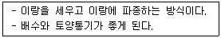
- 평휴법
- 휴립구파법
- 성휴법
- 휴립휴파법
(정답률: 67%)
13. 작물의 내열성에 대한 설명으로 틀린 것은?
- 늙은 잎은 내열성이 가장 작다.
- 내건성이 큰 것은 내열성도 크다.
- 세포 내의 결합수가 많고, 유리수가 적으면 내열성이 커진다.
- 당분함량이 증가하면 대체로 내열성은 증대한다.
(정답률: 55%)
14. 다음 중 자연교잡률(%)이 가장 높은 것은?
- 벼
- 수수
- 보리
- 밀
(정답률: 54%)
15. 공예작물 중 유료작물로만 나열된 것은?
- 목화, 삼
- 모시풀, 아마
- 참깨, 유채
- 어저귀, 왕골
(정답률: 78%)
16. 수광태세가 좋아지고 밀식적응성을 높이는 콩의 초형으로 틀린 것은?
- 키가 크고, 도복이 안 되며, 가지를 적게 친다.
- 꼬투리가 원줄기에 많이 달리고, 밑에까지 착생한다.
- 잎이 크고 가늘다.
- 잎자루가 짧고 일어선다.
(정답률: 56%)
17. 다음 중 CO2 보상점이 가장 낮은 식물은?
- 벼
- 옥수수
- 보리
- 담배
(정답률: 56%)
18. 다음에서 설명하는 것은?
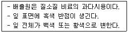
- 아황산가스
- 불화수수가스
- 암모니아가스
- 염소계 가스
(정답률: 68%)
19. 다음 중 천연 옥신류에 해당하는 것은?
- GA2
- IAA
- CCC
- BA
(정답률: 83%)
20. 다음 중 작물별로 구분할 때 K의 흡수비율이 가장 높은 것은?
- 콩
- 고구마
- 옥수수
- 벼
(정답률: 66%)
2과목: 토양비옥도 및 관리
21. 다음 중 수식에 의한 토양침식 방지 식물로 가장 효과적인 것은?
- 옥수수
- 소맥
- 고추
- 클로버
(정답률: 79%)
22. 석회로 산성토양을 중화했을 때 결핍되기 가장 쉬운 영양성분은?
- 몰리브덴
- 마그네슘
- 질소
- 망간
(정답률: 32%)
23. 대개 바람에 의하여 지름 0.1~0.5mm 의 토양입자가 지표면에서 30cm 이하의 높이로 비교적 짧은 거리를 구르거나 튀는 모양으로 이동하는 것은?
- 포복
- 부유
- 약동
- 포행
(정답률: 75%)
24. 두과 식물과 공생에 의한 질소고정균은?
- 클로스트리디움
- 리조비움
- 프랑키아
- 노스톡
(정답률: 76%)
25. 토양 중 지소의 순환과정에서 질소가 가질 수 있는 가장 높은 산화수의 질소형태는?
- N2
- NO2-
- NO3-
- NO
(정답률: 75%)
26. 다음 중 토성별로 비교 시 포장용수량이 가장 높은 것은?
- 사양토
- 양토
- 식토
- 미사질양토
(정답률: 73%)
27. 다음 중 제주도 토양의 모임인 현무암에 대한 설명으로 가장 옳은 것은?
- 지하 깊은 곳에 있는 고온으로 용융된 암장이 냉각·고결된 암석
- 지표면에서 냉각된 반정질이거나 혹은 비정질의 심성암
- 화산암으로서 반려암과 같은 성분으로 되어 있으며, 암색을 띠는 세립질의 치밀한 염기성암
- 중성화성암으로서 주성분은 사장석이며 때로는 각람석과 석영을 함유하는 중점질의 식질토양
(정답률: 62%)
28. 다음 중 토양 pH의 중요성에 대한 설명으로 가장 적절하지 않은 것은?
- 토양의 pH는 무기성분의 용해도를 크게 지배하지 않는다.
- 토양의 pH가 강산성으로 되면 망간의 농도가 높아진다.
- 강우량이 적은 지역에서는 염류의 집적으로 토양의 pH가 높아진다.
- 토양이 산성으로 되면 질소를 고정하는 근류균의 활성이 떨어진다.
(정답률: 59%)
29. 강우 시 유거수에 의한 침식이 가장 잘 일어날 수 있을 것으로 추정되는 팽창형 광물은?
- montmorillonite
- illite
- chlorite
- kaolinite
(정답률: 52%)
30. 식물생육에 적합한 밭토양 표토의 고상을 제외한 수분과 공기의 비율로 가장 적합한 것은?
- 10 % 수분과 90 % 공기
- 50 % 수분과 50 % 공기
- 25 % 수분과 75 % 공기
- 85 % 수분과 15 % 공기
(정답률: 82%)
31. 논토양의 특성으로 옳은 것은?
- 지하수위가 낮고, 담수기간이 길다.
- 담수 환경에서는 호기성 미생물의 활동이 왕성해진다.
- 담수기간이 길어 종종 청회색의 글레이 층이 형성된다.
- 미생물의 호흡작용으로 토층 내 산화화합물이 축적된다.
(정답률: 74%)
32. 다음 중 탄질률이 가장 높은 것은?
- 옥수수찌꺼기
- 알팔파
- 블루그라스
- 활엽수와 톱밥
(정답률: 74%)
33. 다음 중 1차 광물의 풍화내성 정도 비교 시 가장 강한 것은?
- 감람석
- 석영
- 회장석
- 각섬석
(정답률: 81%)
34. pH가 5.0 이하인 강산성 토양에서 식물생육을 저해하는 성분은?
- Al
- Ca
- K
- Mg
(정답률: 65%)
35. 암모니아화 작용에 대한 설명으로 옳은 것만 모두 고른 것은?
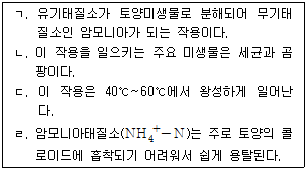
- ㄱ, ㄹ
- ㄱ, ㄴ
- ㄱ, ㄴ, ㄷ
- ㄱ, ㄴ, ㄷ, ㄹ
(정답률: 47%)
36. 다음 중 토양의 구조 가운데 작물생육에 가장 적합한 구조는?
- 입단구조
- 단립(單粒)구조
- 주상구조
- 혼합구조
(정답률: 81%)
37. 토양에서 토양수분이 이동할 때 불포화이동에 대한 설명으로 옳은 것은?
- 중력에 따라 물이 이동하는 것
- 수분장력이 높은 곳에서 낮은 곳으로 이동하는 것
- 증발, 식물의 흡수 또는 관개 등에 의하여 생긴 수분포텐셜 차이에 따라 물이 이동하는 것
- 토양의 공극 전체를 통하여 이동하는 것
(정답률: 69%)
38. 토양 중금속에 대한 설명으로 틀린 것은?
- 비소는 5가 양이온 보다 3가 양이온의 독성이 더 크다.
- 크롬은 3가 양이온 보다 6가 양이온의 독성이 더 크다.
- 인산시용은 카드뮴의 유효도를 증가시킨다.
- 토양 중 납의 천연 함량은 약 10 ppm 정도이다.
(정답률: 59%)
39. 어떤 토층을 Btg라는 기호로 표시하였다. 이 토층의 특성은?
- 석고가 집적된 무기출 표층
- 규산염 점토가 집적된 강 환원 집적층
- 염류가 집적된 동결 집적층
- 탄산염과 나트륨의 집적층
(정답률: 54%)
40. 토양에 존재하는 주요 원소들 중 환원형태로만 나열된 것은?
- CH3COOH, NO3-
- Fe2+, Mn2+
- SO42-, Fe3+
- CO2, S
(정답률: 58%)
3과목: 유기농업개론
41. 다음 중 재배에 적합한 토성의 범위가 가장 작은 것은?
- 아마
- 콩
- 팥
- 녹두
(정답률: 66%)
42. 다음 중 고립상태일 때의 광포화점이 가장 낮은 것은?
- 사탕무
- 콩
- 고구마
- 밀
(정답률: 49%)
43. 지역폐쇄시스템에서 작물양분과 병해충종합관리 기술을 이용하여 생태계 균형유지에 중점을 두는 농업은?
- 자연농업
- 생태농업
- 정밀농업
- 대전식 농업
(정답률: 72%)
44. 다음 중 CAM 식물은?
- 벼
- 파인애플
- 보리
- 옥수수
(정답률: 71%)
45. 양친 A와 B를 교배한 F1을 양친 중 어느 하나와 다시 교배하는 것은?
- 집단육종
- 파생계통육종
- 1개체 1계통 육종
- 여교배
(정답률: 76%)
46. 한 포장에 연작을 하지 않고 몇 가지 작물을 특정한 순서로 반복하여 재배하는 것은?
- 돌려짓기
- 이어짓기
- 사이짓기
- 엇갈아짓기
(정답률: 75%)
47. 유기가축과 비유기가축의 병행사육 시 준수사항으로 가장 적절하지 않은 것은?
- 유기가축과 비유기가축은 서로 독립된 축사(건축물)에서 사육하고 구별이 가능하도록 각 축사 입구에 표지판을 설치하여야 한다.
- 입식시기가 경과한 비유기 가축을 유기가축 축사로 입식하여서는 아니 된다.
- 유기가축과 비유기가축의 생산부터 출하까지 구분관리 계획을 마련하여 이행하여야 한다.
- 유기가축, 사료취급, 약품투여 등은 비유기가축과 공동으로 사용하여 기록 관리하고 보관하여야 한다.
(정답률: 82%)
48. 마늘의 저온저장방법으로 가장 적절한 것은?
- 저온저장은 8~10℃, 상대습도는 약 50%가 알맞다.
- 저온저장은 8~10℃, 상대습도는 약 85%가 알맞다.
- 저온저장은 3~5℃, 상대습도는 약 65%가 알맞다.
- 저온저장은 3~5℃, 상대습도는 약 85%가 알맞다.
(정답률: 58%)
49. 포기를 많이 띄워서 구덩이를 파고 이식하는 방법은?
- 조식
- 이앙식
- 혈식
- 노포크식
(정답률: 58%)
50. 수경재배의 분류에서 고형배지경이면서, 무기배지경에 해당하는 것으로만 나열된 것은?
- 모세관수경, 분무수경
- 분무경, 훈탄경
- 담액수경, 박막수경
- 암면경, 사경
(정답률: 47%)
51. 생물학적 방제법에서 기생성 곤충에 해당하는 것은?
- 침파리
- 풀잠자리
- 꽃등에
- 무당벌레
(정답률: 63%)
52. 각종 금속 용화물이 증기압 중에 방전함으로써 금속 특유의 발광을 나타내는 현상을 이용한 등은?
- 형광등
- 백열등
- 메탈할라이드등
- 고압나트륨등
(정답률: 70%)
53. 짧은 원줄기 상에 3~4개의 원가지를 발달시켜 수형이 술잔모양으로 되게 하는 정지법은?
- 원추형 정지
- 울타리형 정지
- 배상형 정지
- 폐심형 정지
(정답률: 71%)
54. 토양 피복의 목적으로 가장 적합한 것은?
- 공기유동 촉진
- 병해충발생 촉진
- 지온저하 촉진
- 토양수분 유지
(정답률: 75%)
55. 고온장해에 대한 설명으로 가장 적절하지 않은 것은?
- 단백질의 합성이 증가한다.
- 암모니아의 축적이 많아진다.
- 철분이 침전되면 황백화현상이 얼어난다.
- 유기물의 소모가 많아진다.
(정답률: 59%)
56. 토마토에서 실시되며, 눈이 트려고 할 때 필요하지 않은 눈을 손끝으로 따주는 것은?
- 적아
- 휘기
- 제얼
- 절상
(정답률: 71%)
57. 다음 설명에 해당하는 것은?
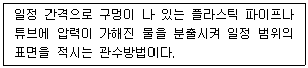
- 분수관수
- 점적관수
- 지중관수
- 저면급수
(정답률: 52%)
58. 다음에서 설명하는 것은?
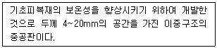
- FRA판
- FRP판
- 복층판
- MMA판
(정답률: 61%)
59. 해마다 좋은 결과를 시키려면 해당 과수의 결과습성에 알맞게 진정을 해야하는데, 2년생 가지에 결실하는 것에 가장 적절한 것으로 나열된 것은?
- 비파, 호두
- 포도, 감귤
- 감, 밤
- 매실, 살구
(정답률: 68%)
60. 유기축산물 사료 및 영양 관리에서 사료에 첨가해서는 아니 되는 물질에 대한 설명으로 가장 적절하지 않은 것은?
- 합성질소 또는 비단백태질소화합물을 첨가해서는 아니 된다.
- 구충제, 항콕시듐제 및 호르몬제를 첨가해서는 아니 된다.
- 유전자조작에 의해 제조·변형된 물질을 첨가해서는 아니 된다.
- 우유 및 유제품을 포함하여 반추가축에게 포유동물에서 유래한 사료는 어떠한 경우에도 첨가해서는 아니 된다.
(정답률: 76%)
4과목: 유기식품 가공.유통론
61. 다음 중 2019년 현재, 우리나라에서 시행하는 친환경 농·축산물 관련 인증제도에 해당하지 않는 것은?
- 유기농산물 인증
- 무농약농산물 인증
- 저농약농산물 인증
- 무항생제축산물 인증
(정답률: 70%)
62. HACCP의 효과와 거리가 먼 것은?
- 사전 예방 체계 가능
- 중요관리점의 모니터링 효율성 향상
- 기록 관리를 통한 책임소재의 명확성 확보
- 수입식품에 대한 효과적 관리시스템 구축
(정답률: 70%)
63. 무균포장에 대한 설명으로 틀린 것은?
- 식품은 신선도를 고려하여 살균할 필요가 없다.
- 포장재도 살균되어야 한다.
- 유통과정 중 오염을 방지할 수 있도록 밀봉하여야 한다.
- 포장과정도 무균적 환경을 유지해야 한다.
(정답률: 83%)
64. 시장의 구성요소인 3M에 해당하지 않는 것은?
- 물적 재화(Merchandise)
- 시장(Market)
- 화폐적 재화(Money)
- 사람(Man)
(정답률: 43%)
65. 시료액을 100배 희석하고 그 중 0.1mL를 표준 평판배지에 분주하여 230개의 집락이 형성된 경우 시료액 1mL 당 세균 수는?
- 2300 CFU
- 23000 CFU
- 230000 CFU
- 2300000 CFU
(정답률: 66%)
66. 마케팅믹스의 4P's에 해당하지 않는 것은?
- Product
- Price
- Place
- People
(정답률: 71%)
67. 식품의 기준 및 규격 상의 정의가 틀린 것은?
- 냉동은 –18℃ 이하, 냉장은 0~10℃를 말한다.
- 건조물(고형물)은 원료를 건조하여 남은 고형물로 별도의 규격이 정하여 지지 않은 한, 수분함량이 10% 이하인 것을 말한다.
- 살균이라 함은 따로 규정이 없는 한 세균, 효모, 곰팡이 등 미생물의 영양세포를 불성화시켜 감소시키는 것을 말한다.
- 유통기간이라 함은 소비자에게 판매가 가능한 기간을 말한다.
(정답률: 57%)
68. 식품의 동결속도에 미치는 영향이 가장 적으며, 동결속도식(Plank식)에서도 직접적으로 사용되지 않는 인자는?
- 식품의 온도
- 식품의 양
- 식품의 밀도
- 냉매의 온도
(정답률: 62%)
69. 건조소시지(dry sausage)에 관한 설명으로 틀린 것은?
- 원료육의 불포화 지방산 함량이 높을수록 좋다.
- 원류육의 pH는 가급적 낮은 것이 좋다.
- 이탈리아의 살라미가 이에 해당한다.
- 장기간 건조하는 특징을 갖고 있다.
(정답률: 43%)
70. 마이크로파(microwave) 가열의 특성이 아닌 것은?
- 신속한 가열이다.
- 식품의 내부에서 열이 발생하여 가열된다.
- 밀폐 및 진공 상태에서의 가열이 어렵다.
- 마이크로파의 침투 깊이에는 제한이 있다.
(정답률: 55%)
71. 선물거래가 가능한 농산물의 조건으로 가장 거리가 먼 것은?
- 연간 절대 거래랴이 많은 품목일 것
- 장기저장성이 있는 품목일 것
- 선도거래가 선행되지 않은 품목일 것
- 표준 규격화가 어렵고 등급이 다양한 품목일 것
(정답률: 77%)
72. 치즈 제조 시 사용하는 렌넷에 포함된 렌닌의 기능은?
- 카파 카제인(κ-casein)의 분해에 의한 카제인(casein) 안정성 파괴
- 알파 카제인(α-casein)의 분해에 의한 카제인(casein) 안정성 파괴
- 베타 락토글로뷸린(β-lactoglobulin)의 분해에 의한 유청단백질 안정성 파괴
- 알파 락토알부민(α-lactoalbumin) 분해에 의한 유청단백질 안정성 파괴
(정답률: 56%)
73. 다음 중 감염형 식중독균이 아닌 것은?
- 살모넬라균
- 황색포도상구균
- 캠필로박터균
- 리스테리아균
(정답률: 52%)
74. 과일잼의 젤리화의 가장 적당한 pH는?
- pH 1
- pH 3
- pH 5
- pH 7
(정답률: 59%)
75. 유기농식품의 구입 전·후에 안전성 문제를 해소할 수 있는 방법으로 가장 거리가 먼 것은?
- 유기농 인증마크 부착
- 생산과정 정보 제공
- 유통과정 정보 제공
- 지역브랜드마크 부착
(정답률: 78%)
76. 우수 농산물 관리제도 도입의 필요성이 아닌 것은?
- 식품안전성에 대한 소비자 요구의 증대
- 식품안전에 관련된 국제동향에 대응
- 자연환경 보호 및 농업의 지속성 확보
- 친환경 농업의 종료에 따른 대인 필요
(정답률: 75%)
77. 최초의 유기표준안을 제정한 영국의 토지조합(Soil Association)이라는 단체를 만들었고, 「살아있는 토양(The Living Soil)」이라는 책을 저술한 영국 유기농업의 선구자는?
- Rudolf Steiner
- Albert Howard
- Eve Balfour
- John Henry
(정답률: 46%)
78. 과일이나 채소의 신선도 유지를 위한 가스치환방법은 공기를 주로 어떤 성분으로 바꾸어 포장하는가?
- 산소, 질소
- 산소, 일산화탄소
- 일산화탄소, 헬륨
- 질소, 이산화탄소
(정답률: 76%)
79. 고전압 펄스법에 대한 설명으로 옳은 것은?
- 고전압과 저전압을 번갈아 가하면서 우유지방구를 균질하는 방법이다.
- 세포막 내·외의 전위차를 크게 형성함으로써 미생물의 세포막을 파괴하며 미생물을 저해시키는 방법이다.
- 고전압을 반복적으로 가하면서 농산물을 파쇄하여 성분추출을 용이하게 하는 방법이다.
- 고압에 의해 세포 내 고분자 물질의 입체구조를 변화시킴으로써 세포를 사멸시키는 방법이다.
(정답률: 53%)
80. 생산물의 품질관리를 위해 유기식품 가공시설에서 사용하는 소독제로 부적합한 것은?
- 차아염소산수
- 염산 희석액
- 이산화염소수
- 오존수
(정답률: 50%)
5과목: 유기농업관련 규정
81. 허용물질의 선정 기준 및 절차 중 허용물질의 신규 선정, 개정 또는 폐지 절차에 대한 내용이다. ( )에 알맞은 내용은?
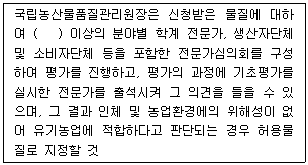
- 3명
- 4명
- 5명
- 7명
(정답률: 57%)
82. 유기축산물 및 비식용유기가공품에서 유기배합사료 제조용 물질 중 단미사료로 사용가능 물질에서 사용가능 조건이 다른 것은?
- 밀기울
- 면실유
- 쌀겨
- 호밀
(정답률: 44%)
83. 친환경농어법 육성 및 유기식품 등의 관리·지원에 관한 법률 시행령에서 과태료의 부과기준에 대한 내용이다. ( )에 알맞은 내용은?
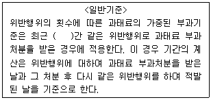
- 3개월
- 6개월
- 1년
- 2년
(정답률: 61%)
84. 인증취소 등 행정처분의 기준 및 절차의 일반기준에 대한 내용이다. ( 가 )에 알맞은 내용은?
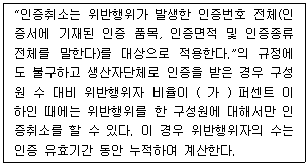
- 20
- 30
- 40
- 50
(정답률: 58%)
85. 유기가공식품 식품첨가물 또는 가공보조제로 사용이 가능한 물질 중 가공보조제로 사용 시 제한 없이 허용이 가능한 것은?
- 비타민 C
- 산소
- DL-사과산
- 산탄검
(정답률: 58%)
86. 유기농업자재의 표시기준의 작도법(도형표시)에서 공시마크의 바탕색은?
- 연두색
- 흰색
- 파란색
- 청록색
(정답률: 45%)
87. 유기식품등의 인증기준 등에서 사용하는 내용으로 “사육되는 가축에 대하여 그 생산물이 식용으로 사용하기 전에 동물용의약품의 사용을 제한하는 일정기간을 말한다.”의 용어는?
- 휴약기간
- 미량기간
- 최소기간
- 윤환기간
(정답률: 76%)
88. “유기농어업자재” 용어의 뜻은?
- 유기농수산물을 생산, 제조·가공 또는 취급하는 과정에서 사용할 수 있는 허용물질을 원료 또는 재료로 하여 만든 제품을 말한다.
- 유기식품, 무농약농수산물 등을 생산, 제조·가공 또는 취급하는 모든 과정에서 사용한 것으로서 농림축산식품부령 또는 해양수산부령으로 정하는 물질을 말한다.
- 무농약농산물, 무항생제축산물, 무항생제수산물 및 활성처리제 비사용 수산물을 말한다.
- 유기적인 방법으로 생산된 유기농수산물과 유기가공식품을 말한다.
(정답률: 57%)
89. 유기농업자재 관련 행정처분기준 중 시험연구기관에서 “시험연구기관의 지정기준에 맞지 않게 된 경우” 1회 위반 시 행정처분은?
- 지정취소
- 업무정지 6개월
- 업무정지 3개월
- 업무정지 1개월
(정답률: 23%)
90. 유기농어업자재의 공시에서 공시의 유효기간으로 옳은 것은?
- 공시의 유효기간은 공시를 받을 날부터 6개월로 한다.
- 공시의 유효기간은 공시를 받을 날부터 1년으로 한다.
- 공시의 유효기간은 공시를 받을 날부터 3년으로 한다.
- 공시의 유효기간은 공시를 받을 날부터 4년으로 한다.
(정답률: 55%)
91. 유기식품등에 사용가능한 물질에서 유기농산물 및 유기임산물에 대한 사항으로 토양개량과 작물생육을 위하여 사용이 가능한 물질 중 사용가능 조건이 “화학물질의 첨가나 화학적 제조공정을 거치지 않아야 하고, 항생물질이 검출되지 않을 것”에 해당하는 것은?
- 비나스
- 혈분
- 설탕
- 포도당
(정답률: 61%)
92. 유기식품등의 유기표시 기준에서 작도법 중 도형 표시방법에 대한 내용으로 틀린 것은?
- 표시 도형의 흰색 모양 하단부 우측 태극의 끝점은 상단부에서 0.55×W 아래가 되는 지점으로 한다.
- 표시 도형의 흰색 모양 하단부 좌측 태극의 시작점은 상단부에서 0.55×W 아래가 되는 지점으로 한다.
- 표시 도형의 흰색 모양과 바깥테두리(좌·우 및 상단부 부분에만 해당한다)의 간격은 0.1×W로 한다.
- 표시 도형의 가로의 길이(사각형의 왼쪽 끝과 오른쪽 끝의 폭 : W)를 기준으로 세로의 기리는 0.95×W의 비율로 한다.
(정답률: 41%)
93. 유기식품등의 인증 신청 및 심사 등에 따른 인증의 유효기간은 인증을 받을 날부터 몇 년으로 하는가?
- 1년
- 2년
- 3년
- 4년
(정답률: 66%)
94. 유기농축산물의 함량에 따른 제한적 유기표시의 기준에서 유기농축산물의 함량에 따른 표시기준 중 특정 원재료로 유기농축산물을 사용한 제품에 대한 내용으로 틀린 것은?
- 특정 원재료로 유기농축산물만을 사용한 제품이어야 한다.
- 해당 원재료명의 일부로 “유기”라는 용어를 표시할 수 있다.
- 표시장소는 원재료명 및 함량 표시란에만 표시할 수 있다.
- 원재료명 및 함량 표시란에 유기농축산물의 총함량 또는 원료별로 ppm 및 mol로 표시하여야 한다.
(정답률: 65%)
95. 유기식품등의 인증기준 등에서 유기축산물에 대한 내용 중 사료 및 영양관리의 구비요건에 대한 내용으로 틀린 것은?
- 반추가축에게 사일리지(silage)만 급여하지 않으며, 비반추가축도 가능한 조사료(粗飼料)를 급여할 것
- 유전자변형농산물 또는 유전자변형농산물에서 유래한 물질은 급여하지 아니할 것
- 유기가축에는 90퍼센트 유기사료를 급여하는 것을 원칙으로 할 것. 다만, 극한 기후조건 등의 경우에는 국립농산물품질관리원장이 정하여 고시하는 바에 따라 유기사료가 아닌 사료를 급여하는 것을 허용할 수 있다.
- 합성화합물 등 금지물질을 사료에 첨가하거나 가축에 급여하지 아니할 것
(정답률: 79%)
96. 유기식품등에 사용가능한 물질에서 유기농산물 및 유기임산물에 대한 내용으로 병해충 관리를 위하여 사용이 가능한 물질 중 사용가능 조건이 “토양에 직접 살포하지 않을 것”에 해당하는 것은?
- 보르도액
- 산염화동
- 구리염
- 생석회(산화칼슘)
(정답률: 62%)
97. 유기식품등의 인증기준 등에서 사용하는 용어의 정의에 대한 내용이다. ( )에 알맞은 내용은?
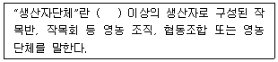
- 2명
- 3명
- 4명
- 5명
(정답률: 56%)
98. 인증기관의 지정기준 중 인력에 대한 내용에서 인증심사원을 몇 명 이상 갖추어야 하는가? (단, “인증기관 지정 이후에는 인증업무량 등에 따라 국립농산물품질관리원장이 정하는 인증심사원을 추가적으로 확보할 수 있을 것”에 대한 내용은 제외한다.)
- 2명
- 3명
- 4명
- 5명
(정답률: 53%)
99. 유기식품등의 인증기준 등에서 유기농산물 및 유기임산물 중 재배포장, 용수, 종자의 구비요건에 대한 내용이다. ( )에 알맞은 내용은?
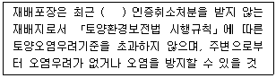
- 1년간
- 2년간
- 3년간
- 4년간
(정답률: 55%)
100. 친환경관련법상 경영관련 자료에 대한 내용이다. ( 가 )에 알맞은 내용은?
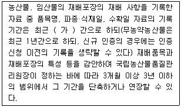
- 6개월
- 9개월
- 2년
- 3년
(정답률: 61%)